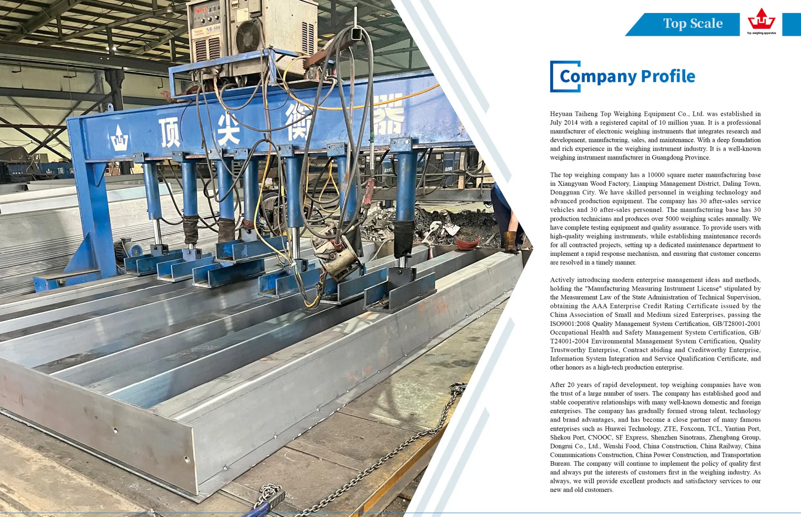
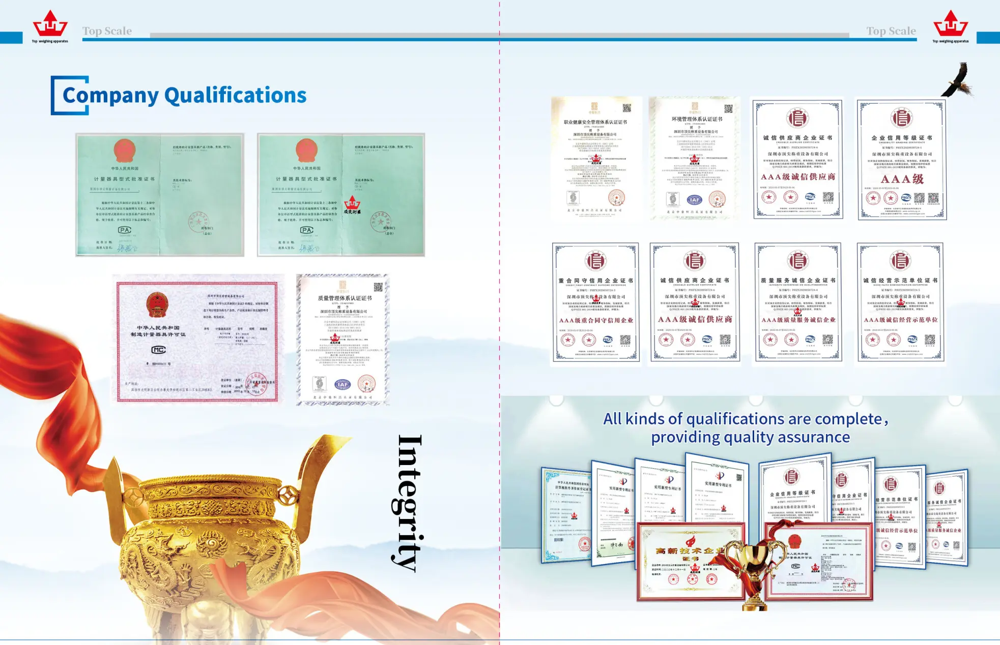
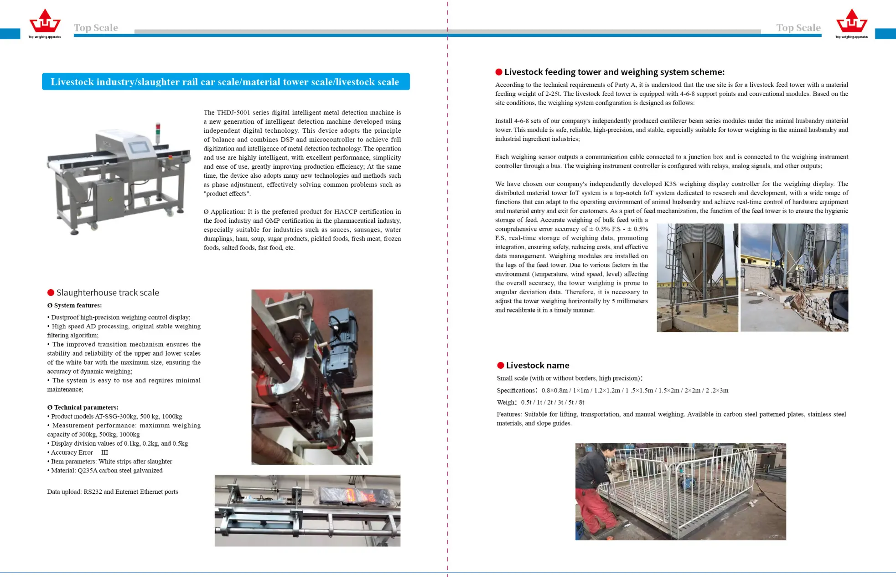
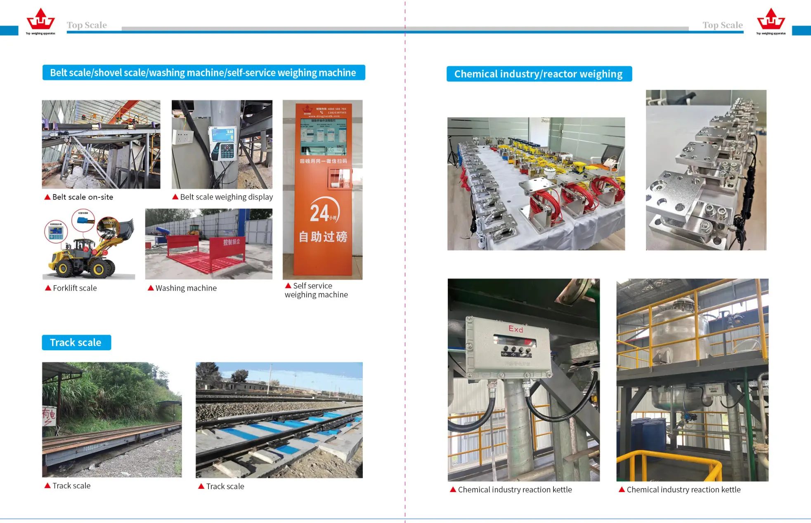
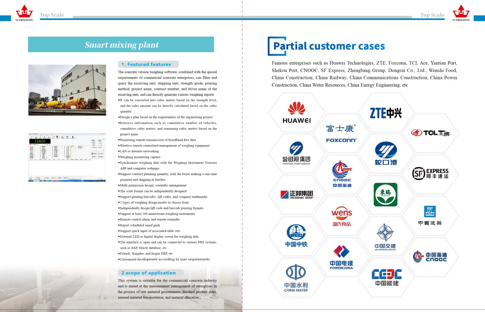

Company brochure · 2024
- Cover and contacts
- Contents
- Company profile
- Facilities and production workshop
- Company qualifications and honors
- Certificate gallery
- Manufacturing and after-sales service
- Split truck scales and load cells
- Weigh modules and access equipment
- Indicators, printers and floor scales
- Livestock scales, feed bins and rail scales
- Card-based weighing and loading management
- Unattended weighing systems
- Unattended system configuration
- Belt, forklift, rail and reactor weighing
- Smart mixing plants and customer examples
Cover and contacts
Heyuan office · Dongguan manufacturing base · Service hotline 4000-566-765 · 0762-2883870 · 277399615@qq.com
 Open full-size spread
Open full-size spreadContents
Company, facilities, qualifications, manufacturing, products and customer references.
 Open full-size spread
Open full-size spreadCompany profile
Established in July 2014, Heyuan Taiheng Top Weighing Equipment Co., Ltd. introduces its history, manufacturing operations and production base.

Open full-size spreadFacilities and production workshop
See the entrance, offices, factory grounds and the workshops used to fabricate and weld scale platforms.
 Open full-size spread
Open full-size spreadCompany qualifications and honors
Inspect the certificates and honors reproduced in the company brochure. Open the full-size spread for details.
 Open full-size spread
Open full-size spreadCertificate gallery
Additional certificates and quality-related documentation from the company catalog.

Open full-size spreadManufacturing and after-sales service
Review the production lines, machining equipment, manufacturing management and after-sales service. The service hotline is 4000-566-765.
 Open full-size spread
Open full-size spreadSplit truck scales and load cells
The SCS range offers 20, 30, 50, 60, 80, 100, 120 and 150 tonne capacities. Compare models, installation layouts, applications and load cell specifications.
 Open full-size spread
Open full-size spreadWeigh modules and access equipment
Compare weigh modules and vehicle access accessories, including card readers, license plate recognition devices, cameras and traffic lights.
 Open full-size spread
Open full-size spreadIndicators, printers and floor scales
Review indicators and printers, then compare floor scale dimensions, capacities and optional stainless steel construction.
 Open full-size spread
Open full-size spreadLivestock scales, feed bins and rail scales
Explore slaughterhouse rail scales, feed bin weighing systems and livestock scales, with equipment and installation photographs.

Open full-size spreadCard-based weighing and loading management
Follow vehicles through entry, weighing, loading, check weighing and release. Diagrams show bulk cargo and quantitative loading arrangements.
 Open full-size spread
Open full-size spreadUnattended weighing systems
Review the components, vehicle weighing workflow and management functions of an unattended weighbridge, illustrated by a site installation.
 Open full-size spread
Open full-size spreadUnattended system configuration
Study the system layout and supporting functions, including vehicle identification, on-site displays and access controls.
 Open full-size spread
Open full-size spreadBelt, forklift, rail and reactor weighing
See weighing equipment for conveyors, material handling, rail vehicles and chemical reactors, alongside wheel washers and self-service weighing terminals.

Open full-size spreadSmart mixing plants and customer examples
Explore the smart mixing plant system, its functions and applications, followed by the customer examples listed in the company brochure.

Open full-size spread